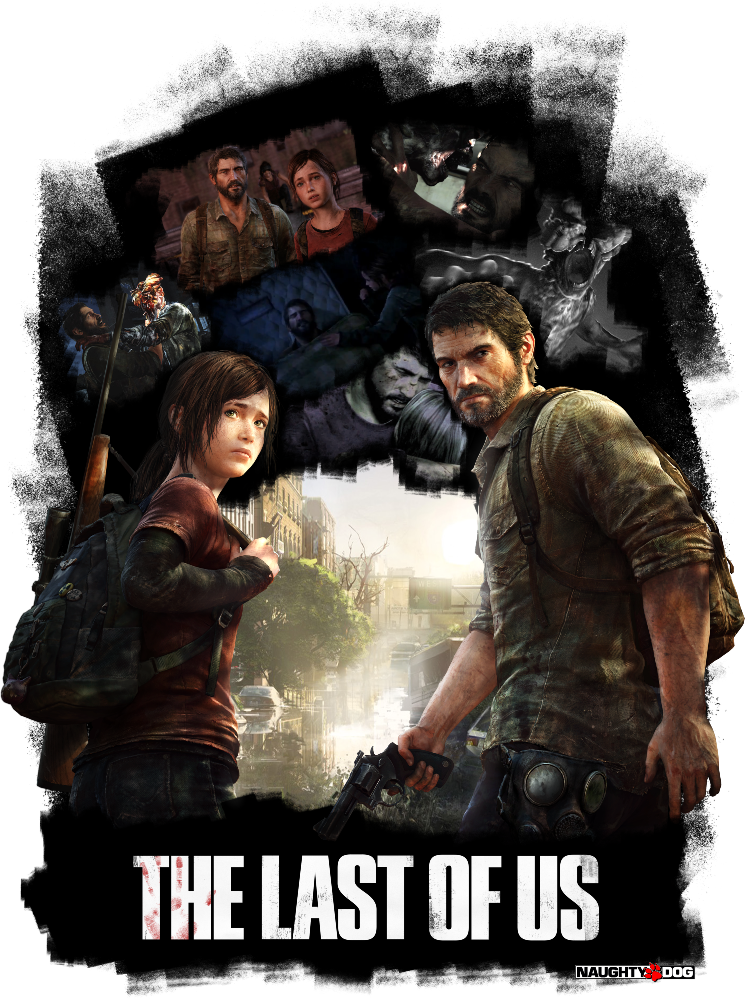
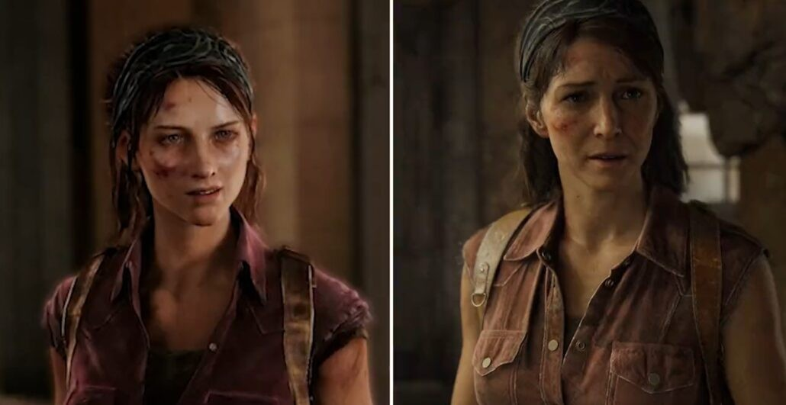
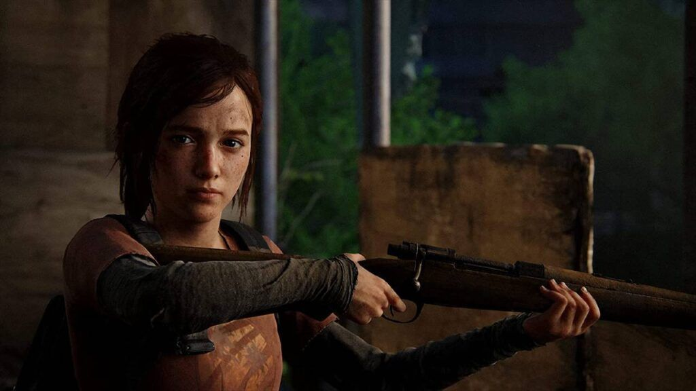

Para as poucas pessoas lendo essa review que não jogaram a obra magna do estúdio Naughty Dog, vamos contextualizar. The Last of Us é um jogo pós-apocalíptico com elementos de tiro em terceira pessoa, furtividade e sobrevivência. E essa popularidade toda que ele alcançou não é à toa.
O game foi um marco na indústria na categoria narrativa, e conta uma história emocionante com roteiro, atuação e direção impecáveis. Os personagens realmente são críveis e agem e reagem como pessoas de verdade.
Você acompanha o contrabandista de meia idade Joel. 20 anos antes, ele viu uma pandemia, causada por um tipo de fungo zumbi, matar mais da metade da população mundial e destruir a sociedade organizada e a sua família.
E agora ele acabou se envolvendo em um trabalho que consiste em levar uma adolescente até um grupo de rebeldes. Mas para isso os dois precisam cruzar metade do país e sobreviver a vários perigos, como humanos assassinos e monstros infectados. Para não entregar spoilers, vamos encerrar a descrição por aqui.

Totalmente recriada com a tecnologia do novo motor gráfico de PS5™ da Naughty Dog, com todos os detalhes visuais aperfeiçoados, a experiência de The Last of Us foi aprimorada com iluminação e atmosfera mais realistas, preservando a fidelidade em ambientes mais complexos e reformulações criativas de lugares familiares.

Todas as armas memoráveis de The Last of Us, inclusive o revólver de Joel e o arco de Ellie, agora contam com recursos dinâmicos de resistência de gatilho e coice ao atirar no controle sem fio DualSense, para uma experiência de combate mais imersiva. A resposta tátil do controle sem fio DualSense™, compatível com todas as armas, aprimora os confrontos, enquanto os ambientes ganham vida com as sensações táteis do DualSense para a chuva, a neve e muito mais.

Criada para fazer o melhor uso da Tempest 3D AudioTech do PS5, a engine de áudio recém-aprimorada da Naughty Dog oferece paisagens sonoras ricas, momentos explosivos mais impactantes e um jogo mais visceral em fones de ouvido estéreo (analógicos ou USB) ou nos alto-falantes da TV.